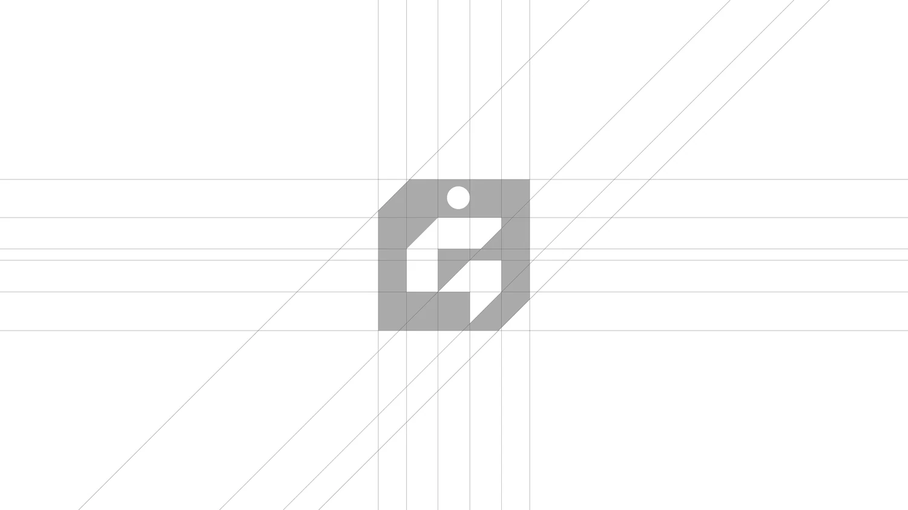
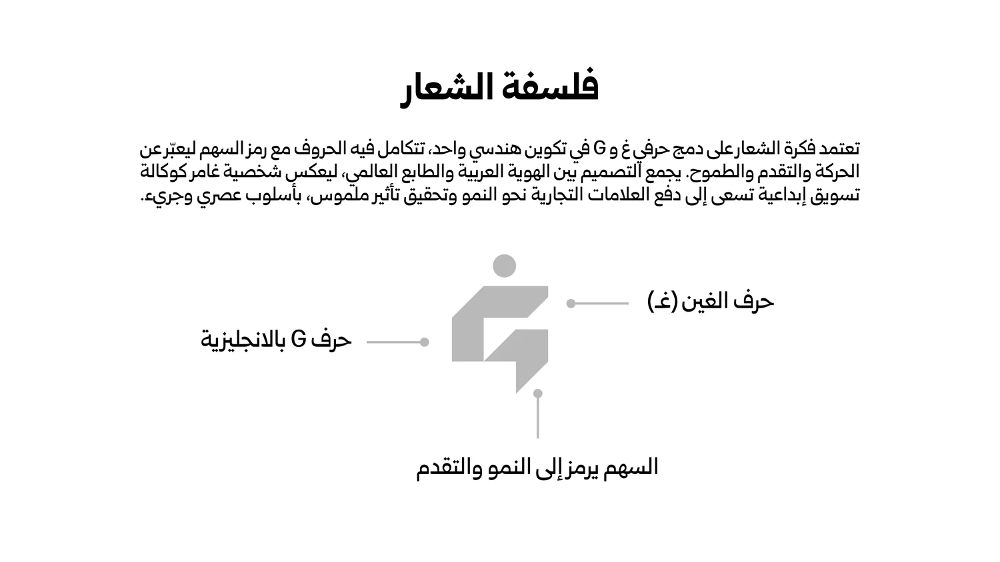
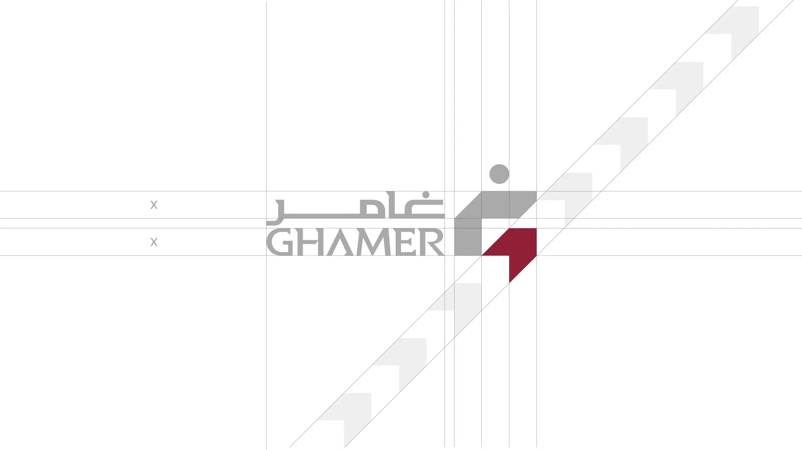
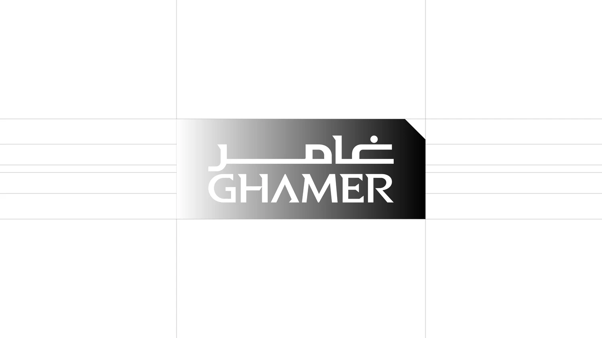
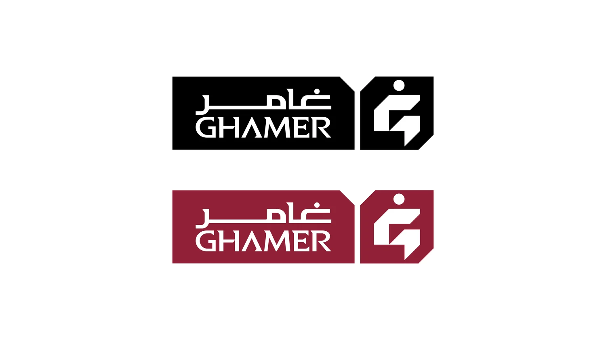
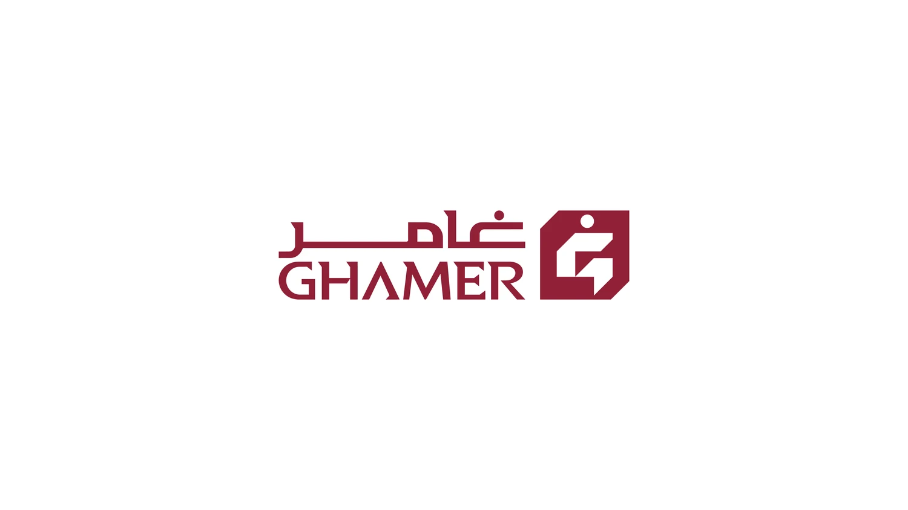
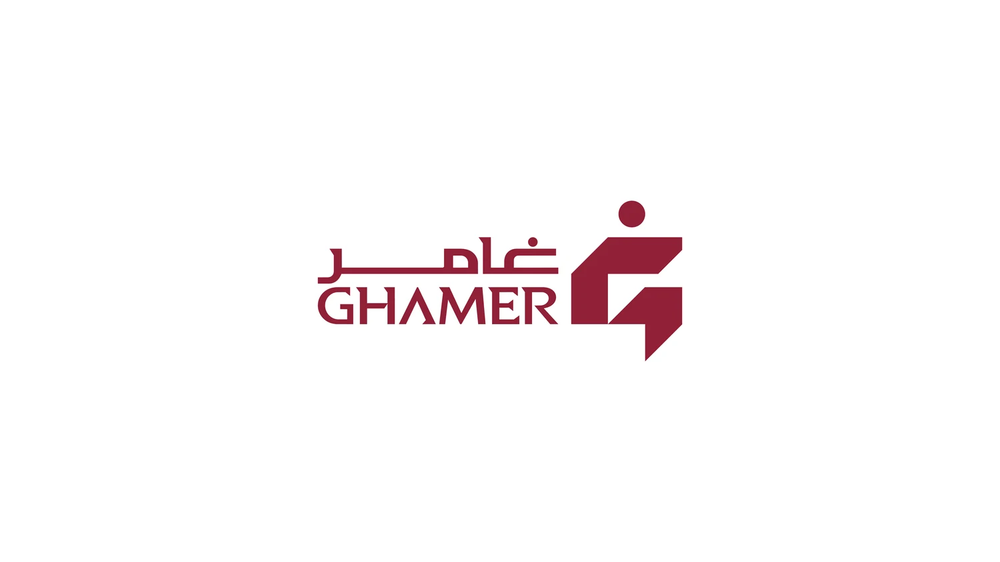
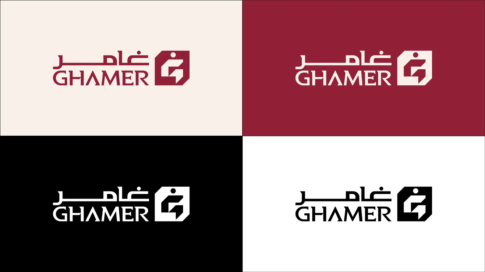
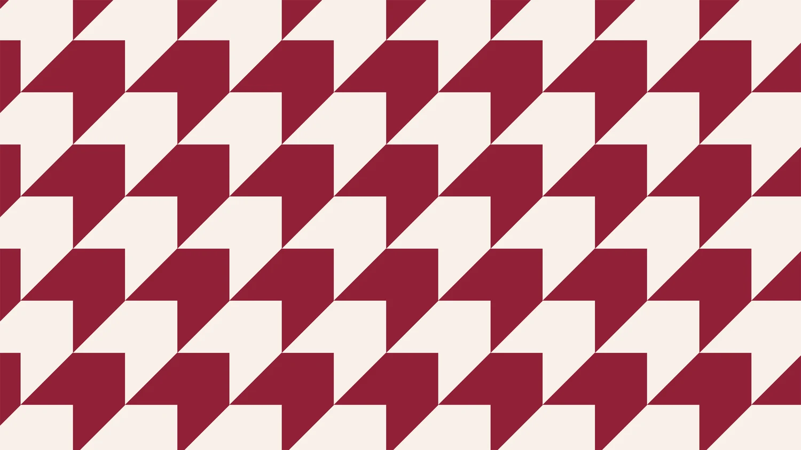
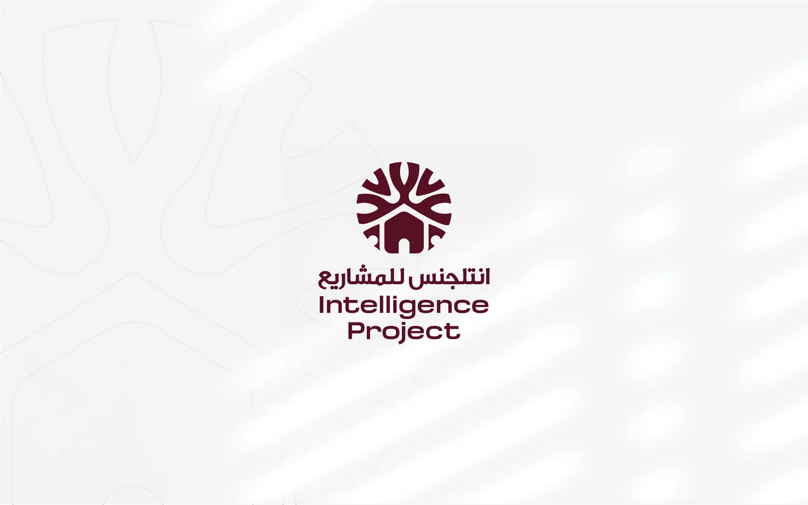

Ghamer
غامر
شعار يدمج حرفي «غ» وG في تكوين هندسي واحد، مع سهم يرمز إلى الحركة والنمو والطموح. يجمع التصميم بين الهوية العربية والطابع العالمي، ليعكس شخصية وكالة تسعى إلى دفع العلامات التجارية نحو النمو وتحقيق أثر ملموس. بالعنابي والبيج والأسود، مع باترن مستلهم من شكل السهم.









انتلجنس للمشاريع
